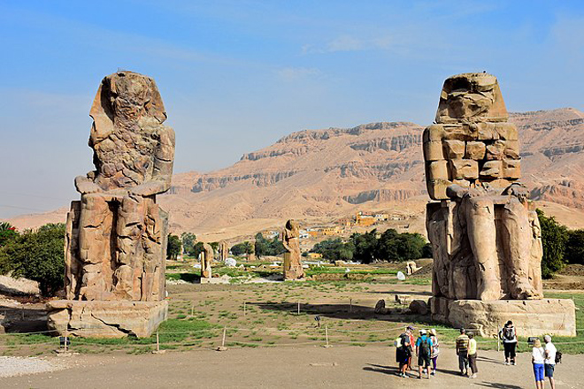
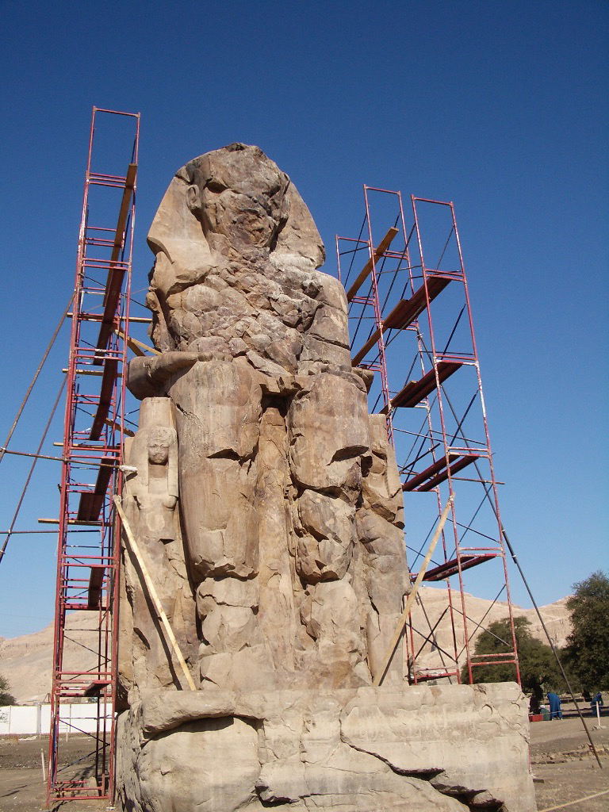
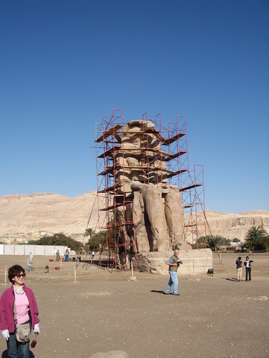
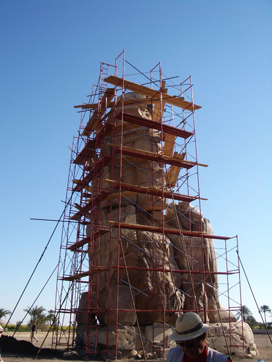
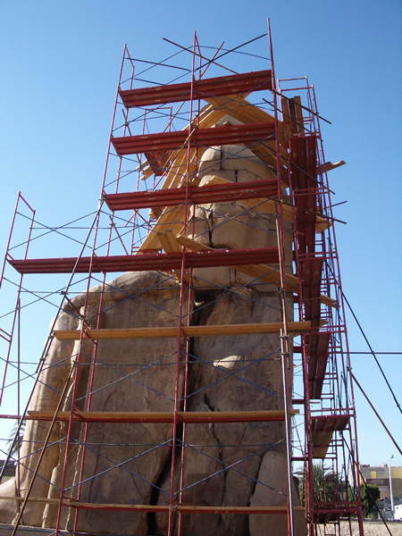
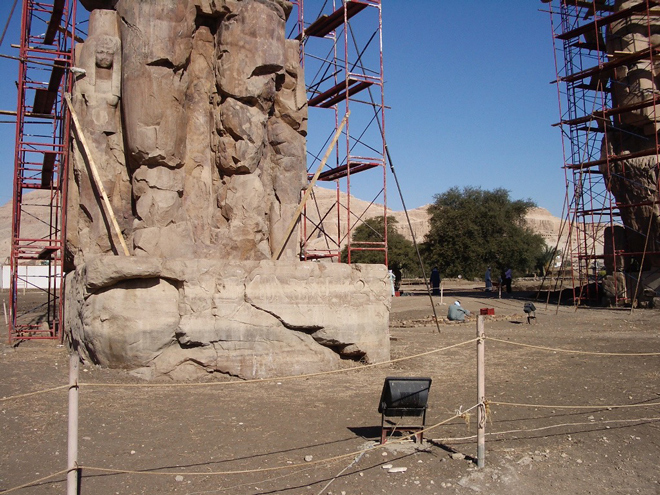
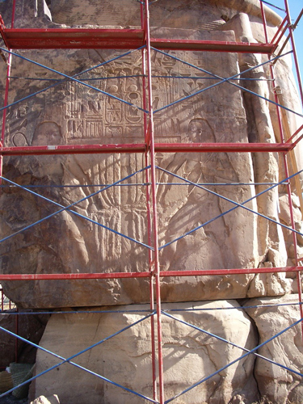
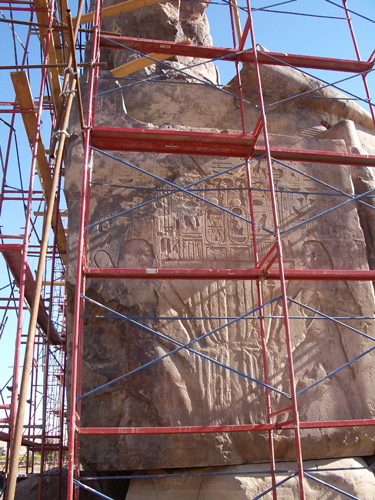
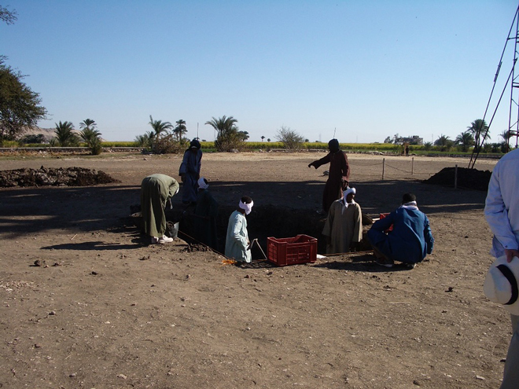
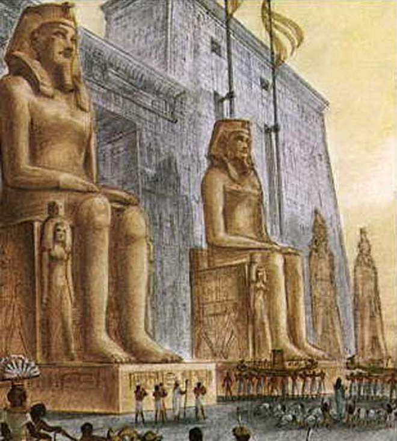

Beside the road that runs from the Valley of the Queens towards the Nile are the famous gigantic statues known as the Colossi of Memnon. Carved out of hard yellowish-brown sandstone quarried in the hills above Edfu, they represent Amenhotep III seated on a cube-shaped throne, and once stood guard at the entrance to the king's temple, of which only scanty traces are left. In Roman Imperial times they were taken for statues of Memnon, son of Eos / Aurora and Tithonus, who was killed by Achilles during the Trojan War.
The South Colossus is better preserved than the one to the north. It stands 19.6m high and the base is partly buried under the sand. With the crown that it originally wore but has long since vanished, the total height must have been over 21m.
The North Colossus is the famous "musical statue," which brought flocks of visitors here during the Roman Imperial period. Visitors observed that the statue emitted a musical note at sunrise and this gave rise to the myth that Memnon was greeting his mother, Eos / Aurora, with this soft, plaintive note. The sound ceased to be heard after Emperor Septimus Severus had the upper part of the statue restored in AD 193.







Behind the statues, you can see the site (currently being excavated by archaeologists) where Amenhotep III's temple once sat.

An artist's impression of how the Colossi could have looked when acting as guards to Amenhotep III's temple.
